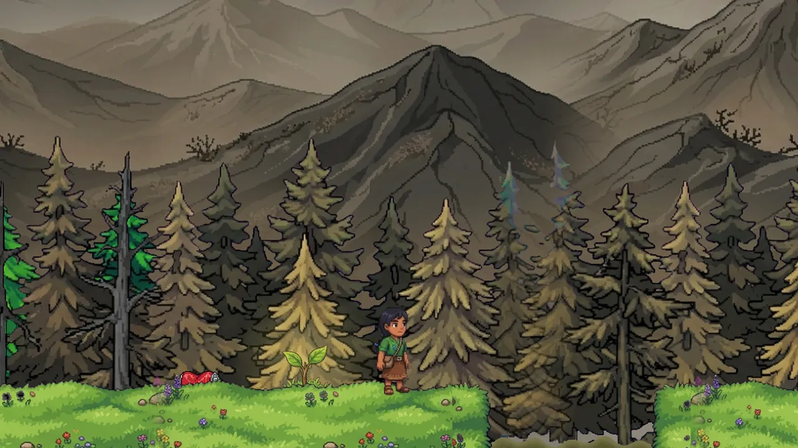

Zona 1
Río Cupatitzio · El agua es vida
Recoge la basura del río, conoce qué tarda en desaparecer cada cosa y arregla las compuertas para que el agua de la fábrica pase por la planta de tratamiento.
Acertijo: arma con Don Chucho un filtro de agua con grava, arena, algodón y carbón. Premio: aprendes a nadar.